STILLWATER · FINAL TRANSITION · REGENERATED ARTWORK
Gorge sky — closed cloud composition
Rounded cloud volumes · pale ink washes
Transparent PNG layers · sumi-e & watercolor





STILLWATER · FINAL TRANSITION · REGENERATED ARTWORK
Rounded cloud volumes · pale ink washes
Transparent PNG layers · sumi-e & watercolor




